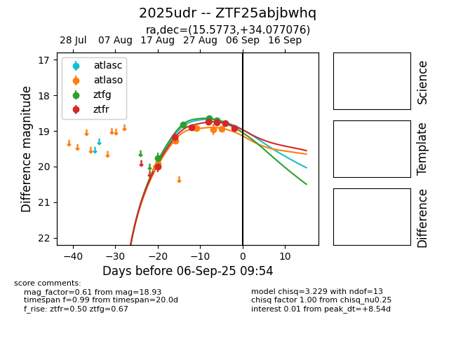

Target 2025udr at 2025-08-26 11:00, see:
FINK: fink-portal.org/ZTF25abjbwhq
Lasair: lasair-ztf.lsst.ac.uk/objects/ZTF25abjbwhq
ALeRCE: alerce.online/object/ZTF25abjbwhq
TNS: wis-tns.org/object/2025udr
YSE: ziggy.ucolick.org/yse/transient_detail/2025udr
alt names
ZTF25abjbwhq (ztf,fink)
2025udr (tns,yse)
coordinates:
equatorial (ra, dec) = (15.5773,+34.07708)
galactic (l, b) = (125.4992,-28.74047)
photometry
last atlaso=18.91, ztfg=18.82, ztfr=18.89
3 atlaso, 2 ztfg, 3 ztfr detections
